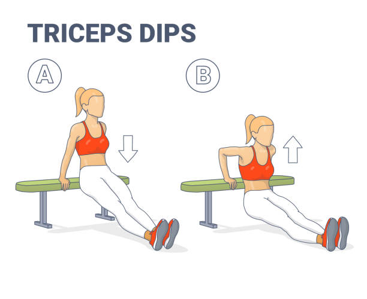

Nằm sấp xuống sàn, duỗi thẳng người, hai tay đặt dưới vai, lòng bàn
tay chống xuống đất.
Hai chân khép lại, mũi chân chạm đất.
Cơ thể tạo thành một đường thẳng từ đầu đến gót chân, không để mông bị
đẩy lên quá cao hoặc thấp xuống.
2: Thực hiện hít đất
Hạ thấp cơ thể: Gập khuỷu tay và hạ ngực xuống gần mặt đất, giữ lưng
thẳng. Đảm bảo khuỷu tay tạo góc khoảng 45 độ với cơ thể.
Đẩy lên: dùng lực tay đẩy cơ thể trở lại tư thế ban đầu, giữ cho cơ
thể luôn thẳng.
3: lưu ý khi tập
Thở đều: Hít vào khi hạ thấp người xuống và thở ra khi đẩy lên.
Không cong lưng: Đảm bảo cơ thể luôn giữ thẳng từ đầu đến gót chân.
Kiểm soát động tác: Thực hiên rộng rãi, tránh đẩy quá nhanh gây mất
thăng bằng.
4: Số lần lặp lại
Người mới bắt đầu có thể thực hiện từ 8-12 lần trong 3 set. Khi quen
dần, bạn có thể tăng số lần lặp lại hoặc tăng độ khó với các biến thể
hít đất khác nhau.
Hít Đất Kim Cương
1: Tư thế chuẩn bị
Nằm sấp xuống sàn, đặt hai tay dưới ngực, hai ngón trái và ngón trỏ
chạm vào nhau tạo thành hình viên kim cương (hoặc tam giác).
Chân duỗi thẳng ra phía sau, mũi chân chạm sàn.
Cơ thể từ đầu đến chân phải tạo thành một đường thẳng.
2: Hạ người xuống
Hít vào khi bạn từ từ hạ thấp người xuống, giữ cho lưng thẳng và không
để hông xệ xuống hoặc nhô cao.
Hạ cơ thể xuống cho đến khi ngực chạm vào tay.
3: Đẩy người lên
Thở ra khi bạn đẩy cơ thể lên bằng lực từ cơ tay sau và ngực, trở lại
tư thế bắt đầu.
Khi đẩy người lên, giữ cơ thể luôn thẳng, không uốn cong lưng hoặc
hông.
4: Lặp lại
Lặp lại động tác này theo số bạn mong muốn. Nếu bạn mới bắt đầu, có
thể tập 8-12 lần mỗi set và 2-3 lần mỗi buổi tập.
5: Lưu ý
Nếu cảm thấy quá khó, bạn có thể bắt đầu với hít đất đầu gối (giữ đầu
gối chạm sàn).
Đảm bảo cơ thể không bị chùng hoặc căng quá mức, giữ form tập luyện
đúng là rất quan trọng để tránh chấn thương.
Bench Dip

1: Chuẩn bị
Chọn một băng ghế hoặc bề mặt cố định, chắc chắn, cao ngang đầu gối.
Đảm bảo không gian xung quanh đủ rộng để thực hiện động tác an toàn.
2: Tư thế bắt đầu
Ngồi lên băng ghế, hai tay đặt ở mép băng ghế, lòng bàn tay úp xuống,
ngón tay hướng về phía trước.
Mở rộng chân ra phía trước, gót chân chạm sàn, đầu gối hơi gập hoặc
duỗi thẳng tùy khả năng.
Nhấc mông khỏi băng ghế, giữ tay ở vị trí cố định, đây là tư thế bắt
đầu.
3: Thực hiện động tác
Hạ người xuống:
Từ từ hạ thấp khuỷu tay, hạ người xuống thấp, giữ lưng thẳng và gần
sát với băng ghế.
Hạ người đến khi khuỷu tay tạo góc khoảng 90 độ hoặc cảm thấy căng cơ
tay sau.
Nâng người lên:
Dùng lực từ tay sau, duỗi thẳng khuỷu tay để nâng người lại tư thế ban
đầu.
Không khóa khớp khuỷu tay khi duỗi hoàn toàn.
4: Lưu ý khi tập
Tư thế lưng: Giữ lưng thẳng, không ngả người ra trước hoặc sau quá
nhiều.
Khuỷu tay: Giữ khuỷu tay gần sát với cơ thể, không để khuỷu tay hướng
ra ngoài.
Hơi thở: Hít vào khi hạ xuống và thở ra khi nâng người lên.
Số lần lặp lại: Thực hiện 10-15 lần mỗi set, tùy thuộc vào khả năng,
tập 3-4 set.
5: Biến thể nâng cao
Thêm tạ: Đặt một tấm tạ lên đùi để tăng độ khó.
Chân cao: Đặt chân lên một bề mặt cao (như ghế khác) để tăng độ thử
thách cho cơ tay sau.
bodyweight tripceps extension
1: Tư thế chuẩn bị
Đứng thẳng, đối diện một bề mặt cố định như bàn, ghế, hoặc tường (nếu tập ở nhà).
Đặt hai tay lên bề mặt đó, rộng bằng vai, lòng bàn tay úp xuống.
Bước lùi lại để cơ thể tạo một góc nghiêng, giữ thẳng lưng, cơ thể thẳng từ đầu đến chân.
2: Thực hiện động tác
Gập khuỷu tay từ từ, hạ người xuống bề mặt tập (tường bàn hoặc ghế).
Giữ cách tay trên cố định, chỉ để cổ tay di chuyển.
Khi khuỷu tay tạo góc 90 độ, dừng lại.
Dùng lực từ cơ tam đầu để đẩy lại cơ thể trở lại vị trí ban đầu.
3: Hít thở
Hít vào khi hạ người xuống, thở ra khi đẩy người lên.
Spiderman Push-up
1: Vị trí bắt đầu
Bắt đầu ở tư thế hít đất thông thường, tức là tay đặt rộng bằng vai và cơ thể tạo thành một
đường thẳng từ đầu đến chân.
Cơ thể của bạn phải giữ thẳng trong suốt quá trình tập.
2: Hạ người xuống
Hạ người xuống bằng cách khuỵu khuỷu tay, giống như bạn đang thực hiện một hít đất bình thường.
Trong khi hạ người xuống, bạn đồng thời kéo một chân lên phía ngoài cơ thể, giống như đang đưa
đầu gối về phía khuỷu tay.
3: Chạm khuỷu tay với đầu gối
Khi hạ người xuống, cố gắng đưa đầu gối của chân (bên trái hoặc bên phải) đến gần khuỷu tay cùng
bên. Ví dụ, khi bạn hạ xuống, chân trái sẽ đưa về phía khuỷu tay trái
Điều này giúp tăng cường khả năng vận động của cơ hông và cơ bụng.
4: Đẩy lên
Sau khi hạ xuống và chạm đầu gối vào khuỷu tay, đẩy người lên như trong bài tập hít đất thông
thường.
Đồng thời, đẩy chân quay trở lại vị trí ban đầu (thẳng ra sau).
5: Lưu ý khi thực hiện Spiderman Push-up
Kỹ thuật đúng: Đảm bảo giữ cơ thể thẳng và cứng trong suốt bài tập, không để
hông bị xệ xuống hoặc căng quá mức.
Thở đúng cách: Hít vào khi hạ người xuống và thở ra khi đẩy người lên.
Kiểm soát chuyển động: Không vội vàng trong mỗi lần hạ xuống hoặc đẩy lên, thực
hiện động tác chậm rãi và có kiểm soát để tránh chấn thương.
Wide Push-up
1: Tư thế chuẩn bị
Vào tư thế plank cao: Đặt hai tay lên sàn, rộng hơn vai khoảng 1,5 - 2 lần.
Đặt hai tay lên sàn, rộng hơn vai khoảng 1,5-2 lần.
Cánh tay thẳng nhưng không khóa khớp.
Cơ thể thẳng: Giữ lưng, hông, và chân thẳng hàng, không võng lưng hoặc cong
mông.
Siết cơ bụng và cơ mông để ổn định cơ thể.
Vị trí chân: Hai chân khép lại hoặc cách nhau một khoảng nhỏ để giữ thăng bằng.
2: Cách thực hiện
Hạ người xuống: Gập khuỷu tay từ từ, hạ ngực gần chạm sàn.
Khuỷu tay hướng ra hai bên, tạo góc khoảng 45-90 độ so với thân người.
Hạ thấp đến khi ngực cách sàn khoảng 2-5 cm (nếu bạn đủ sức).
Đẩy người lên: Dùng lực từ cơ ngực và cơ tay sau để đẩy người trở lại tư thế
ban đầu.
Giữ thẳng tay nhưng không khóa khớp khuỷu tay.
Hít thở: Hít vào khi hạ người xuống, thở ra khi đẩy người lên.
Incline Push-up
1: Tư thế chuẩn bị
Tìm một bề mặt cao: Sử dụng bàn, ghế, bậc thang, hoặc tường. Đảm bảo bề mặt ổn
định, không trơn trượt.
Tay đặt trên bục: Đặt hai tay lên bề mặt, rộng hơn vai một chút.
Ngón tay hướng về phía trước.
Thân người thẳng: Duỗi thẳng chân ra sau, mũi chân chạm sàn.
Lưng, hông, và chân tạo thành một đường thẳng.
Siết chặt cơ bụng và cơ mông để giữ cơ thể ổn định.
2: hực hiện Incline Push-up
Hạ người xuống: Gập khuỷu tay từ từ, hạ ngực xuống gần chạm bề mặt.
Giữ khuỷu tay tạo góc 45–60 độ so với thân người (không để quá rộng).
Giữ lưng và hông thẳng, không để võng lưng hoặc cong mông.
Đẩy người lên: Dùng lực từ cơ ngực và tay sau để đẩy người trở lại tư thế ban
đầu.
Không khóa khớp khuỷu tay khi đẩy lên.
Lưu ý khi tập
Giữ cơ thể thẳng: Đảm bảo lưng, hông, và chân luôn thẳng hàng. Không để lưng
võng hoặc mông nâng cao.
Kiểm soát động tác: Thực hiện chậm và có kiểm soát, không dùng quán tính để đẩy
người lên.
Thăng bằng: Chọn bề mặt ổn định và chắc chắn để tránh trượt ngã.
Góc khuỷu tay: Không để khuỷu tay mở quá rộng vì dễ gây áp lực lên vai.
Hít thở đúng cách: Điều hòa hơi thở giúp tối ưu hóa hiệu quả bài tập.
Lợi ích của Incline Push-up
Tăng cường sức mạnh cơ ngực: Tập trung vào phần ngực dưới và giữa.
Giảm áp lực lên vai và cổ tay: Phù hợp cho người mới bắt đầu hoặc phục hồi chấn
thương.
Kích hoạt cơ tay sau và cơ lõi: Giúp cải thiện sự ổn định và sức mạnh tổng thể.
Dễ thực hiện: Không cần dụng cụ phức tạp, có thể tập ở bất cứ đâu.
Declinec Push-up
1: Tư thế chuẩn bị
Chọn bề mặt cao: Dùng ghế, bục, hoặc bậc thang ổn định để đặt chân. Đảm bảo bề
mặt không trơn trượt.
Vào tư thế plank: Đặt hai tay trên sàn, rộng hơn vai một chút.
Chân duỗi thẳng ra sau, đặt mũi chân lên bề mặt cao đã chọn.
Giữ cơ thể tạo thành một đường thẳng từ gót chân đến đầu, không võng lưng hoặc nâng mông quá
cao.
Siết cơ lõi: Siết chặt cơ bụng và mông để giữ thăng bằng và ổn định cơ thể.
2: hực hiện Decline Push-up
Hạ người xuống: Gập khuỷu tay từ từ, hạ ngực gần chạm sàn.
Khuỷu tay tạo góc 45–60 độ so với thân người, không mở quá rộng.
Đẩy người lên: ùng lực từ cơ ngực và cơ tay sau để đẩy cơ thể trở lại tư thế
ban đầu.
Không khóa khớp khuỷu tay khi lên để giữ áp lực lên cơ bắp.
3: Lưu ý khi tập
Giữ cơ thể thẳng: Đảm bảo lưng, hông, và chân tạo thành một đường thẳng. Không
để lưng võng hoặc cong mông.
Kiểm soát động tác: Thực hiện chậm và có kiểm soát để tối ưu hóa hiệu quả bài
tập và tránh chấn thương.
Thăng bằng: Đảm bảo bề mặt đặt chân ổn định để tránh trượt ngã.
Hít thở đúng cách: Điều hòa hơi thở, không nín thở trong quá trình tập.
Tránh căng vai: Không để khuỷu tay mở quá rộng vì dễ gây áp lực lên vai.
4: Lợi ích của Decline Push-up
Phát triển cơ ngực trên: Tăng cường độ tập trung vào phần ngực trên, giúp cơ
ngực đầy đặn hơn.
Cải thiện sức mạnh thân trên: Tăng sức mạnh cho cơ vai, cơ ngực, cơ tay sau và
cơ lõi.
Đốt cháy calo: Bài tập đa cơ này tiêu tốn nhiều năng lượng, giúp đốt mỡ hiệu
quả.
Tăng khả năng vận động: Cải thiện sức mạnh chức năng và khả năng kiểm soát cơ
thể.
Pike Push-up
1: Tư thế chuẩn bị
Bắt đầu ở tư thế Plank cao: Hai tay đặt trên sàn, rộng bằng vai, ngón tay hướng
về phía trước.
Chân duỗi thẳng, mũi chân chạm sàn.
Nâng hông lên cao: Đẩy hông lên sao cho cơ thể tạo thành hình chữ "V" ngược.
Tay, lưng và chân duỗi thẳng.
Đầu thả lỏng giữa hai cánh tay, mắt nhìn xuống sàn hoặc hướng về ngón chân.
Khoảng cách chân và tay: Điều chỉnh khoảng cách để cảm thấy thoải mái và giữ
trọng lượng dồn lên tay.
2: Thực hiện Pike Push-up
Hạ người xuống: Gập khuỷu tay từ từ, hướng cùi chỏ ra hai bên (không quá rộng).
Hạ đầu xuống sàn hoặc gần chạm sàn, giữ hông ở vị trí cố định.
Đẩy người lên: Dùng lực từ cơ vai và cơ tay sau để đẩy cơ thể trở lại vị trí
ban đầu.
Hít thở: Hít vào khi hạ người xuống, thở ra khi đẩy người lên.
3: Lưu ý khi tập
Tư thế cơ thể: Giữ hông cao và thẳng, không để lưng võng xuống.Đầu luôn ở giữa
hai cánh tay.
Kiểm soát động tác: Thực hiện động tác chậm và có kiểm soát, không dùng quán
tính.
Góc khuỷu tay:Không để khuỷu tay mở quá rộng để tránh áp lực lên khớp vai.
Trọng lượng dồn lên tay: Dồn trọng lượng cơ thể lên cánh tay và vai, không dồn
quá nhiều vào chân.
Hít thở đều đặn: Đừng nín thở; điều hòa hơi thở sẽ giúp duy trì sức bền.
4: Lợi ích của Pike Push-up
Tăng cường cơ vai: Tập trung phát triển sức mạnh cho cơ vai trước, cơ ngực trên
và tay sau.
Cải thiện sức mạnh thân trên: Là bước chuẩn bị lý tưởng cho các bài tập nâng
cao như Handstand Push-up.
Tăng tính linh hoạt: Kéo căng gân kheo và cơ lưng khi duy trì tư thế chữ "V"
ngược.
Thực hiện ở mọi nơi: Không cần dụng cụ, phù hợp để tập tại nhà hoặc ngoài trời.
Push-back Push-up
1: Tư thế chuẩn bị
Vào tư thế plank cao: Đặt hai tay trên sàn, rộng hơn vai một chút, lòng bàn tay
úp xuống, chân duỗi thẳng, mũi chân chạm sàn. Cơ thể tạo thành một đường thẳng từ đầu đến gót chân.
Siết chặt cơ lõi và mông: Đảm bảo lưng không võng, hông không nâng cao.
2: Thực hiện Push-back Push-up
Hạ người xuống: Gập khuỷu tay, hạ ngực gần chạm sàn như một động tác hít đất
thông thường.
Đẩy người về sau: Thay vì đẩy thẳng lên, đẩy người ra sau sao cho mông hướng về
gót chân, tay vẫn giữ nguyên vị trí, lưng thẳng, và hông được nâng lên một chút.
Quay lại tư thế ban đầu: Dùng lực từ cánh tay và cơ lõi để đưa người về tư thế
plank cao.
Hít thở: Hít vào khi hạ người xuống, thở ra khi đẩy người về sau và quay lại tư
thế ban đầu.
3: Lưu ý khi tập
Giữ tư thế đúng: Lưng thẳng, không võng lưng hoặc cong mông quá cao, cơ thể cần
chuyển động mượt mà, không gượng ép.
Kiểm soát động tác: Thực hiện động tác chậm và có kiểm soát để tối ưu hóa hiệu
quả.
Hơi thở đều: Hít thở đúng cách giúp duy trì sức bền và tập trung.
Tập trung vào cơ vai và cơ lõi: Khi đẩy về sau, hãy cảm nhận sự căng cơ vai và
cơ lõi để tối ưu hiệu quả bài tập.
Crab Walk
1: Tư thế chuẩn bị
Ngồi trên sàn: Đặt mông chạm sàn, đầu gối cong, hai chân mở rộng bằng vai. Hai
tay đặt sau lưng, lòng bàn tay úp xuống và ngón tay hướng về phía chân (hoặc hướng ra ngoài nếu cảm thấy thoải
mái hơn).
Nâng hông lên: Đẩy hông lên cao sao cho cơ thể tạo thành một đường xiên từ vai
đến đầu gối, Siết cơ lõi và cơ mông để giữ thăng bằng.
2: Thực hiện Crab Walk
Di chuyển tay và chân: Di chuyển tay phải và chân trái về phía trước một bước
nhỏ, sau đó di chuyển tay trái và chân phải về phía trước.
Tiếp tục di chuyển: Lặp lại bước 1, di chuyển theo từng bước nhỏ trong khoảng
10–15 giây hoặc theo số bước mục tiêu.
Quay trở lại: Sau khi đi tới, di chuyển ngược lại bằng cách lùi từng tay và
chân.
Hít thở: Hít thở đều đặn trong suốt quá trình thực hiện.
3: Lưu ý khi tập
Giữ hông cao: Đảm bảo hông không sụp xuống trong suốt bài tập.
Di chuyển có kiểm soát: Di chuyển chậm và đều, tránh bước quá dài hoặc quá
nhanh.
Giữ cổ thoải mái: Giữ cổ thoải mái:
Bảo vệ cổ tay: Nếu cảm thấy đau cổ tay, bạn có thể đổi hướng ngón tay ra ngoài
để giảm áp lực.